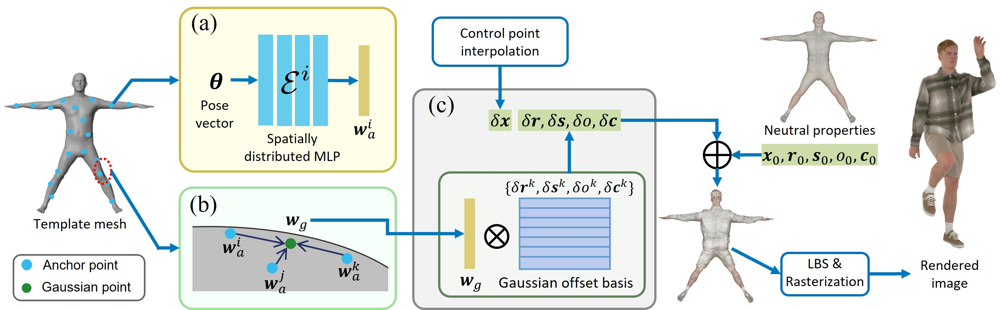

Many works have succeeded in reconstructing Gaussian human avatars from multi-view videos. However, they either struggle to capture pose-dependent appearance details with a single MLP, or rely on a computationally intensive neural network to reconstruct high-fidelity appearance but with rendering performance degraded to non-real-time. We propose a novel Gaussian human avatar representation that can reconstruct high-fidelity pose-dependence appearance with details and meanwhile can be rendered in real time. Our Gaussian avatar is empowered by spatially distributed MLPs which are explicitly located on different positions on human body. The parameters stored in each Gaussian are obtained by interpolating from the outputs of its nearby MLPs based on their distances. To avoid undesired smooth Gaussian property changing during interpolation, for each Gaussian we define a set of Gaussian offset basis, and a linear combination of basis represents the Gaussian property offsets relative to the neutral properties. Then we propose to let the MLPs output a set of coefficients corresponding to the basis. In this way, although Gaussian coefficients are derived from interpolation and change smoothly, the Gaussian offset basis is learned freely without constraints. The smoothly varying coefficients combined with freely learned basis can still produce distinctly different Gaussian property offsets, allowing the ability to learn high-frequency spatial signals. We further use control points to constrain the Gaussians distributed on a surface layer rather than allowing them to be irregularly distributed inside the body, to help the human avatar generalize better when animated under novel poses. Compared to the state-of-the-art method, our method achieves better appearance quality with finer details while the rendering speed is significantly faster under novel views and novel poses.

(a) We define the spatially distributed MLPs on anchor points, which are uniformly sampled on the template mesh. Each MLP takes the pose θ as input and outputs the anchor coefficients wa.
(b) The Gaussian coefficients wg are interpolated from the coefficients of three nearest anchor points.
(c) The Gaussian property offsets are obtained by linearly combining Gaussian offset basis using Gaussian coefficients. Then the neutral Gaussian properties are added with Gaussian property offsets to model the human appearance under pose θ.
Finally the Gaussians are transformed to the pose θ and rasterized to produce high-fidelity images. Note that the Gaussian position offset δx is obtained through control point interpolation.
@article{zhan2025realtime,
title={Real-time High-fidelity Gaussian Human Avatars with Position-based Interpolation of Spatially Distributed MLPs},
author={Zhan, Youyi and Shao, Tianjia and Yang, Yin and Zhou, Kun},
journal={arXiv preprint arXiv:2504.12909},
year={2025}
}